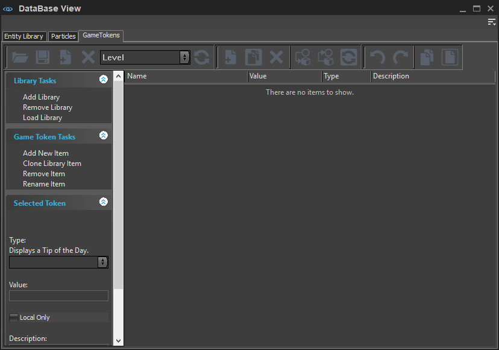

GameTokens tab on DataBase View is no longer supported in CRYENGINE. It will be removed from the engine layout in the future and some features might not function as expected.
Overview
A Game Token is a script object or variable that is used for storing values. These tokens can be used for performing simple logic manipulations, and checking a value in the game scripting language.

Possible token functions include states (squad mate = dead or alive), characters, information (research tool results), sequential logic (an event has taken place, in if/then sequences), or objects (for example, weapons, vehicles).
These are represented within various flow nodes with different functions, inputs, outputs, and checks.
In the database, all the defined values are stored in libraries. By loading or not loading the same library for every level, tokens can be set to be active only within one level, across multiple levels, or only in part of one level.
Toolbar
Game Tokens tab uses the default DataBase View toolbar set. For all the toolbar options and their functionalities, please refer to the DataBase View page.
Creating Tokens
In order to create a new game token, click Add New Item on Game Token Tasks list and give the token a name. After you have created a token, you can choose from the following types: Bool, Int, Float, String, or Vec3.
Depending on the chosen type, the token will get the following values:
Value | Description |
|---|---|
Bool | True or False states. |
Int | Any whole number. |
Float | Any floating point number. |
String | Any sequence of characters. |
Vec3 | Any 3 dimensional positional coordinate (x,y,y) - for example, 290,200,180. |
Don't forget to add a description in the Description field, you may find it come in handy later on when you have many tokens in the library.
Saving Tokens across Levels
There are 2 specific Flow Graph nodes related to the storing of information across levels.
- Mission:GameTokensLevelToLevelStore - Trigger this at the end of the level, and it will save the values specified in the listed game tokens.
- Mission:GameTokensLevelToLevelRestore - Trigger this at the beginning of the next level to retrieve the values from the previous level.
Debugging
To investigate which game tokens are active or being modified during a session, you can enable a few CVars to track the recent changes.
New items get added to the bottom of the list and are colored red. They will fade to white over time & as new ones get added to the bottom of the list.
- gt_Show - 1=screen and log, 2=screen only, 3=log only . Displays a log of the recently changed tokens in the top left (default) of the screen.
- gt_showFilter - In the historic list only shows game tokens that include the filter string.
- gt_showLines - How many lines is used by the historic list.
- gt_showPosX - Defines the starting column in screen for game tokens debug info.
- gt_showPosY - Defines the starting row in screen for game tokens debug info.